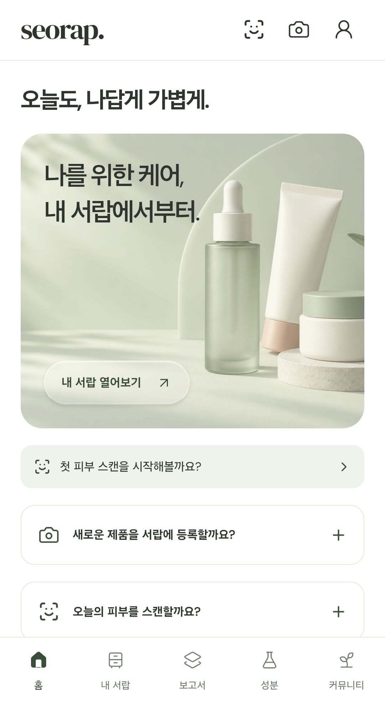
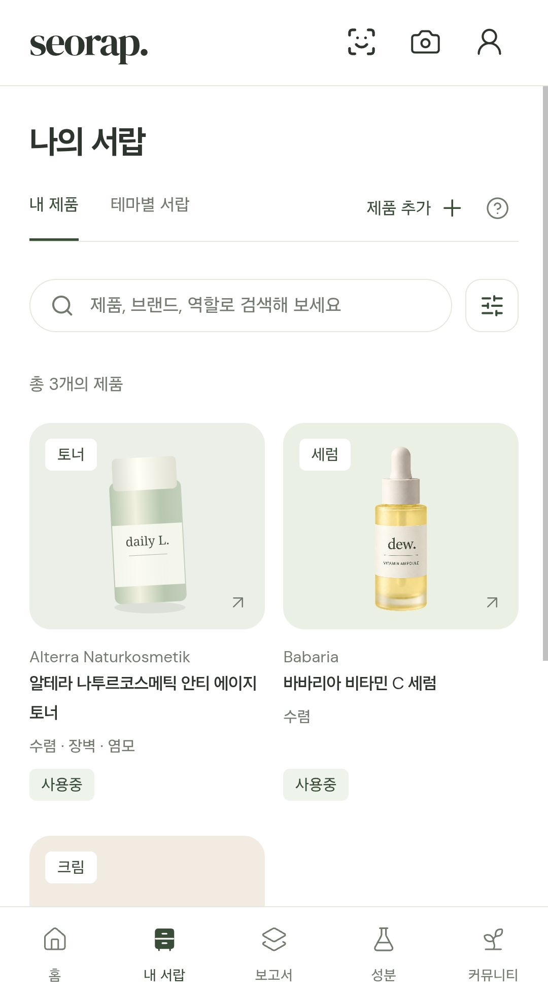
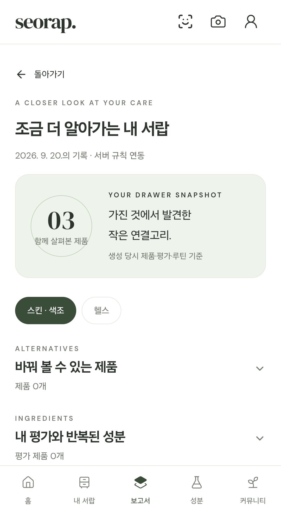
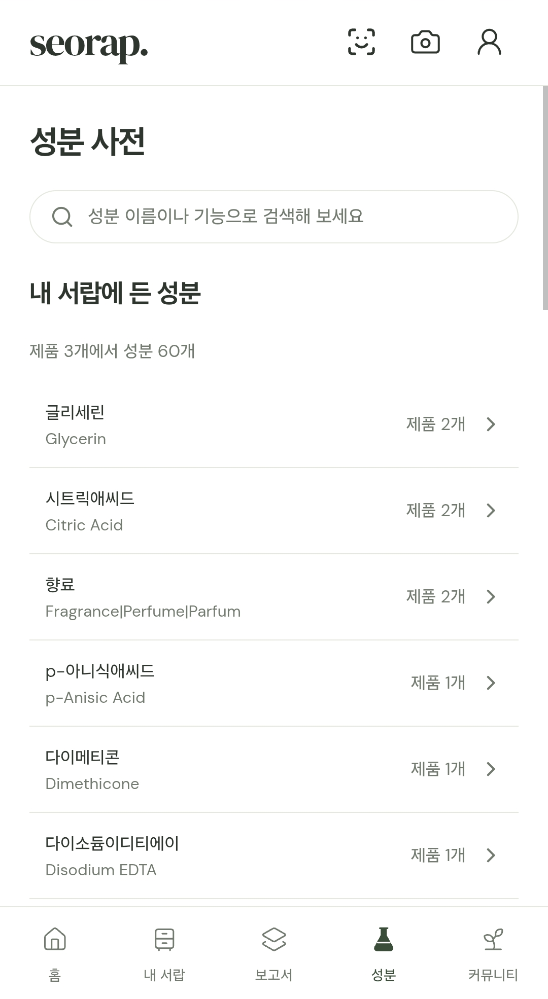
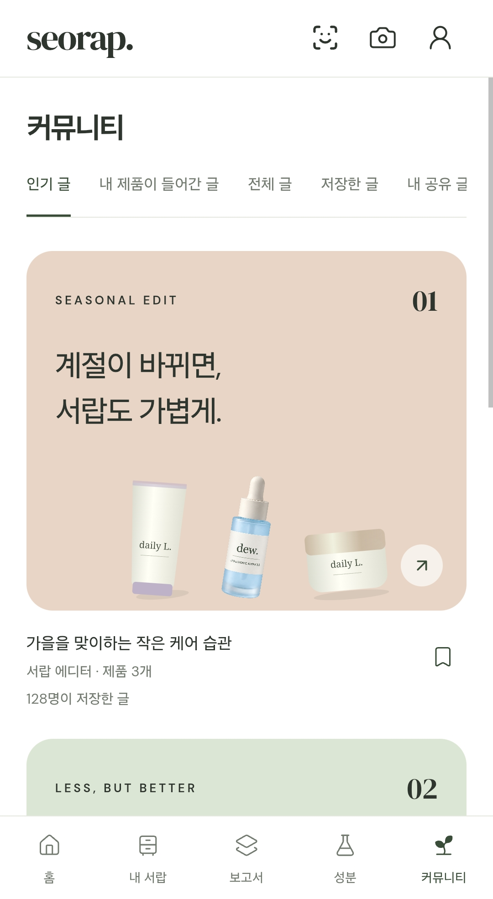

서랍보유 제품과 사용 루틴 관리
보유 제품의 역할·전성분·사용 평가를 통합해 제품 비교와 루틴 관리를 지원합니다.
 Python
Python FastAPI
FastAPI PostgreSQL
PostgreSQL PyTorch
PyTorch PaddleOCR
PaddleOCR Google Vision
Google Vision React Native / Expo
React Native / Expo TypeScript
TypeScript
서비스 화면
홈

나의 서랍

보고서

성분 사전

커뮤니티
데모
관리 목적별 고객 페르소나
매장 상담과 개인의 루틴 관리에서 발견한 불편을 시장 조사와 대조했습니다. 보유 제품 정리·루틴 간소화·뷰티와 건강 제품 통합 관리의 세 유형으로 고객 요구를 구분했습니다.
기획 단계의 고객 가설보유 제품 정리

루틴 간소화
뷰티·건강 통합 관리
고객 목적과 기능 설계의 연결

사용 목적에 따른 보고서 정보 우선순위
제품을 교체하려 할 때
낮게 평가한 제품의 공통 성분과 같은 역할의 대체 제품을 비교합니다.
제품 수를 줄이려 할 때
긍정 평가한 제품을 기준으로 역할이 겹치는 제품을 비교합니다.
계절이 바뀔 때
계절별 관리 목적에 맞는 역할과 보유 제품을 확인합니다.
새 제품 구매를 고민할 때
구매 후보와 보유 제품의 역할·성분을 대조합니다.
같은 역할이 여러 개일 때
개봉일과 남은 사용 기한을 기준으로 보유 제품을 정리합니다.
사용 목적별 보고서 섹션 순서
situationsectionOrder
피부 스캔·OCR 모델 비교와 적용 기준
피부 스캔은 항목별 등급 일치도와 모델 크기를, OCR은 전성분 정규화 성능과 제품 등록 대기를 기준으로 평가했습니다.
OCR · 엔진 비교와 도메인 학습
OCR 전용 엔진과 시각 언어 모델을 비교했습니다. 입력 해상도·검출기·인식기를 바꾸며 성분명 복원 성능을 평가했습니다.
비교 모델 PaddleOCR · HunyuanOCR-1.5 · Qwen3-VL-8B · Windows OCR · EasyOCR

인식 성능과 운영 조건을 함께 평가
전성분 정규화 재현율을 기준으로 공식 검출기와 파인튜닝한 인식기를 조합했습니다. 서비스에는 등록 대기와 운영 비용을 고려해 Google Vision을 주 엔진으로, 오류 시 PaddleOCR을 호출하도록 구성했습니다.
피부 스캔 · 백본 비교와 경량화
백본 5종을 동일한 학습 조건으로 비교하고, ConvNeXt-T와 MobileNetV4-M은 난수 시드 3개로 반복 평가했습니다.
비교 모델 ResNet-50 · MobileNetV4-M · ConvNeXt-T · ConvNeXt-T DINOv3 · EfficientNetV2-S

7개 평가 항목을 공유 백본으로 통합
ConvNeXt-T의 예측을 MobileNetV4-M에 학습시키는 지식 증류를 적용했습니다. 7개 항목을 처리하는 33.9MB ONNX 모델을 구성하고, 별도 테스트셋에서 항목·연령대별 성능을 확인했습니다.
한국어 표시명·카테고리 보정으로 검색 대상 확대
한국어 표시명이 없는 제품은 검색에서 제외됐고, 포괄적인 원본 태그는 세부 카테고리에 연결되지 않았습니다. 크림·세럼 같은 키워드에 의존한 분류에서 브랜드 고유 제품명이 누락돼, 제품명·브랜드·카테고리를 함께 재검토했습니다.
- 01표시명 정리
외국어 제품명을 한글로 음역해 검색에 반영했습니다.
- 02분류 보완
규칙 기반 재분류 후 제품명·브랜드·카테고리를 재검토했습니다.
- 03DB 반영
보정한 분류 결과를 DB에 반영했습니다.
후보 확인을 앞당긴 제품 등록 절차
내부 테스트에서 사진 인식 대기로 검색보다 등록이 오래 걸리는 경우가 있었습니다. 검색 등록 경로를 별도로 제공하고, 앞면 인식 결과에서 제품을 찾지 못할 때 추가 촬영을 요청하도록 변경했습니다.
등록 절차 변경 · 후보 확인 시점

성분 집계의 사전 계산으로 조회 지연 개선
성분 동시출현 집계가 DB 실행 제한 5초를 초과해 상세 조회가 실패했습니다. 집계를 배치 작업으로 분리하고 API는 저장된 결과를 조회하도록 변경했습니다.
성분 상세 조회 · 계산 시점과 응답 결과
조회 요청 → 동시출현 계산 → 시간 제한
사전 계산 → 결과 저장 → 조회 시 읽기
데이터 갱신과 예외 처리
카탈로그 변경 시 집계 배치를 재실행합니다. 집계 결과가 없는 성분은 요청 시 계산하므로 DB 실행 제한 5초의 영향을 받습니다.